Approx 60 Participants. One Collective Breath.
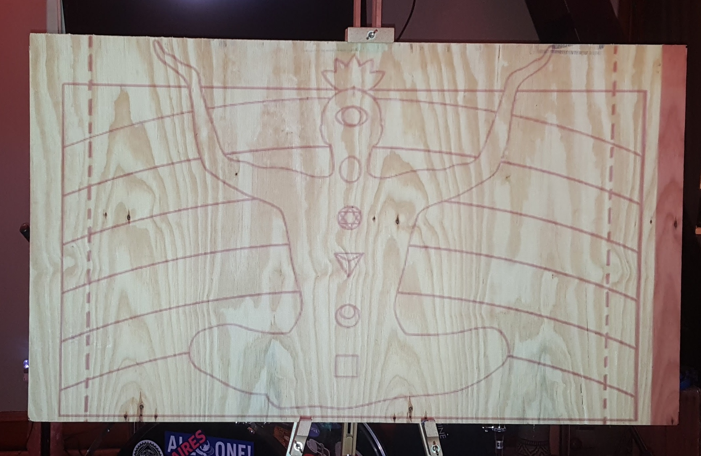
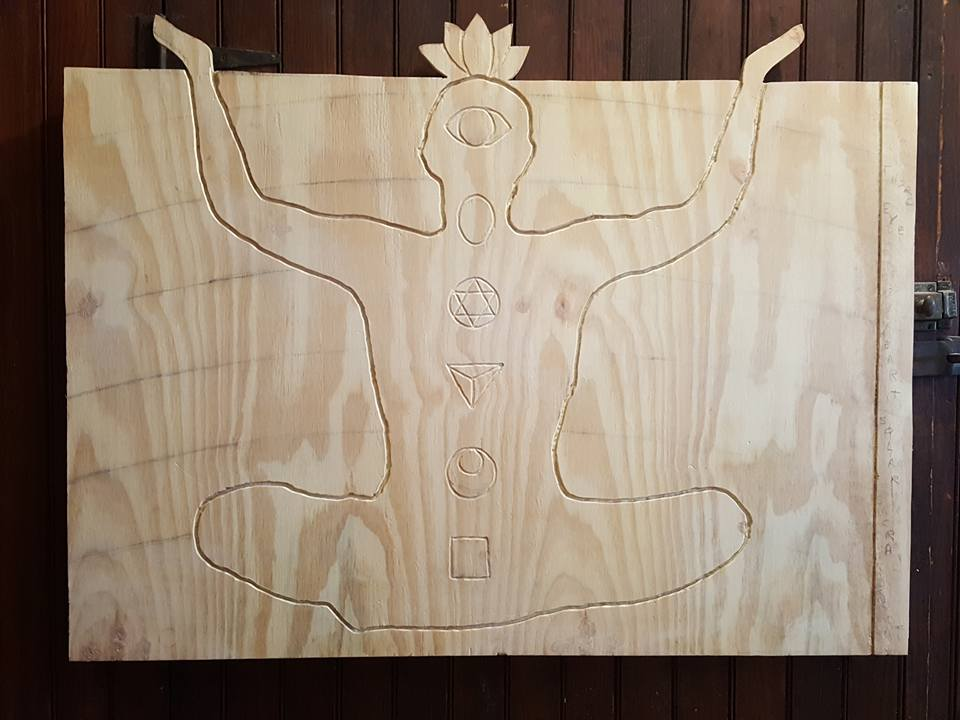
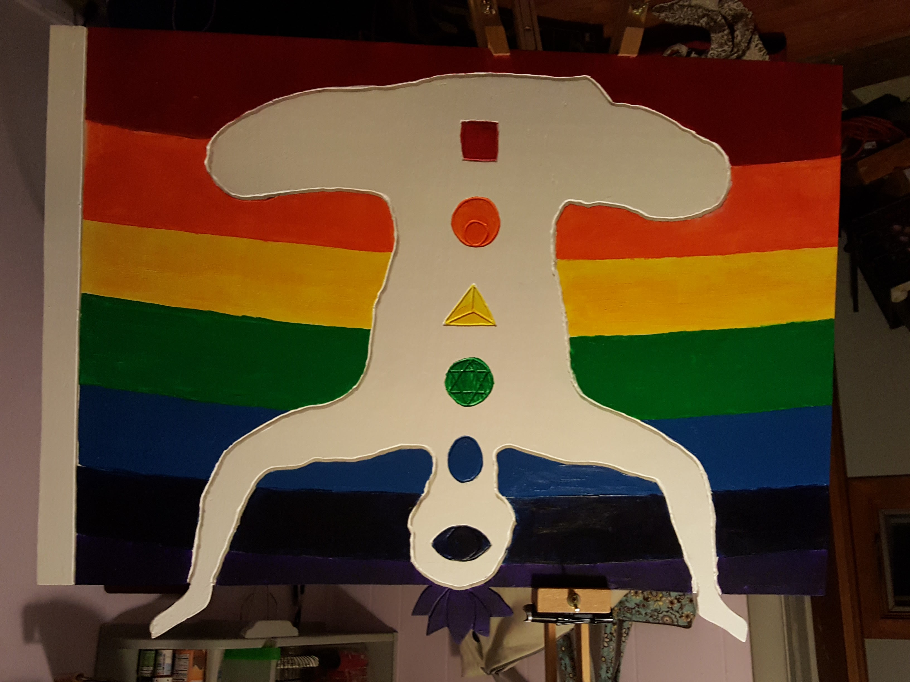
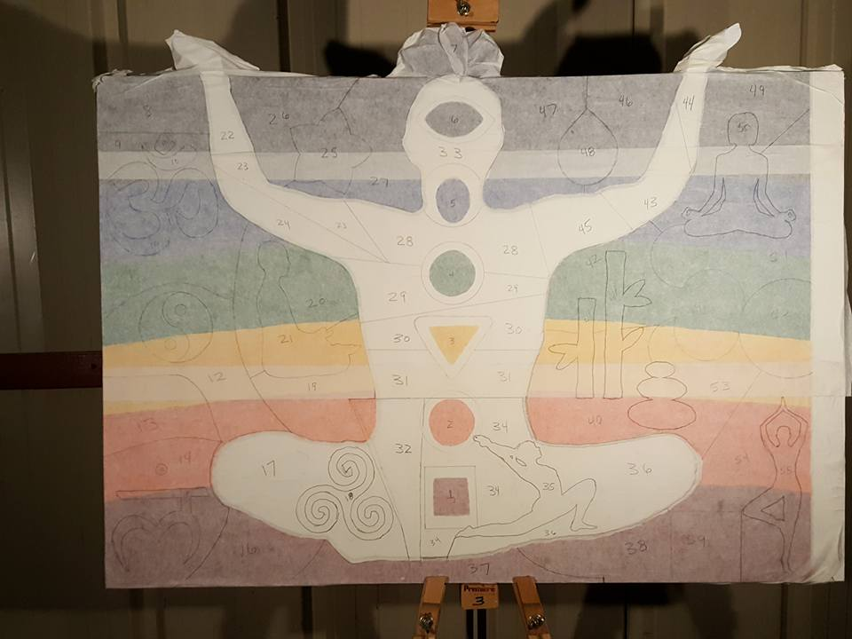
The figure was established in solitude, holding the pose before the energy of the crowd arrived.
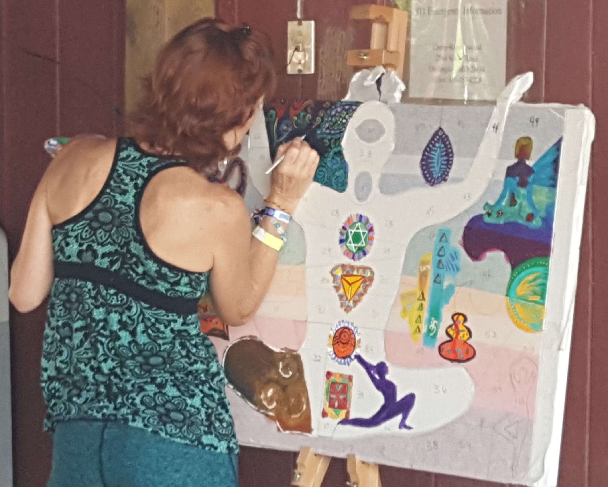
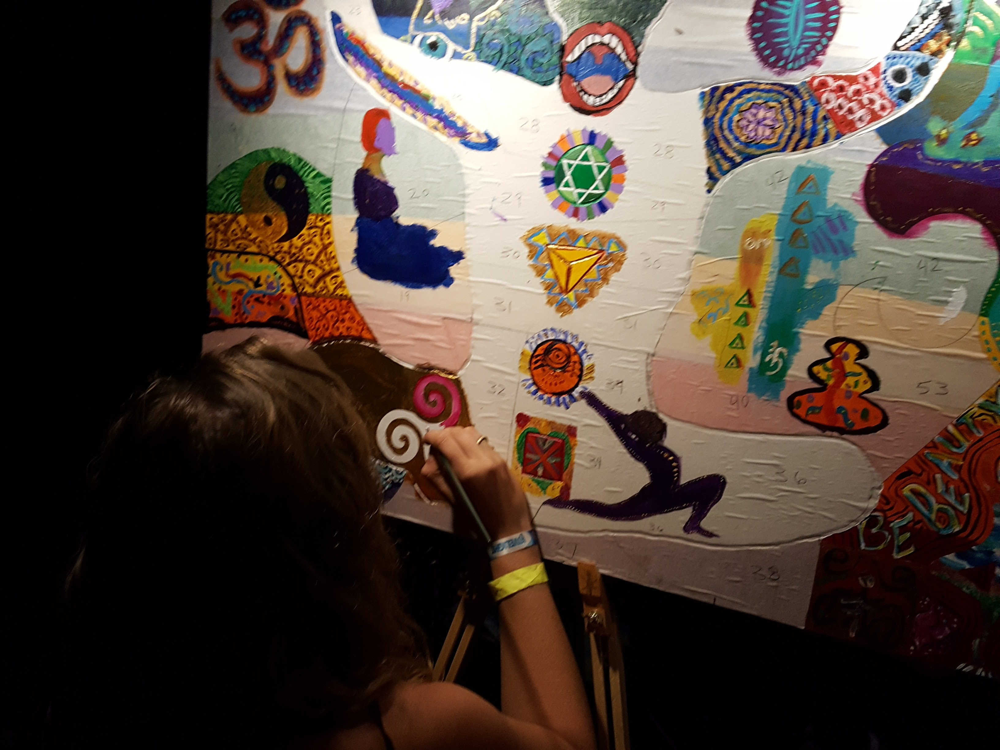
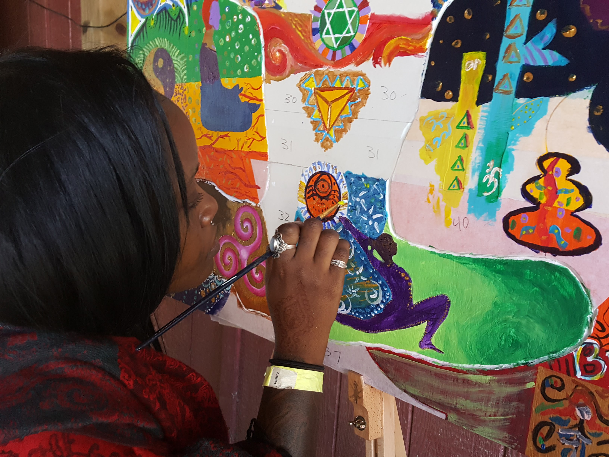
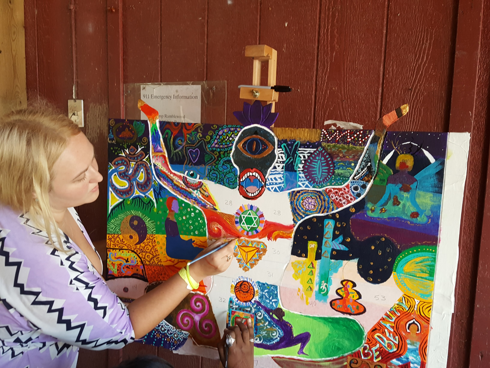
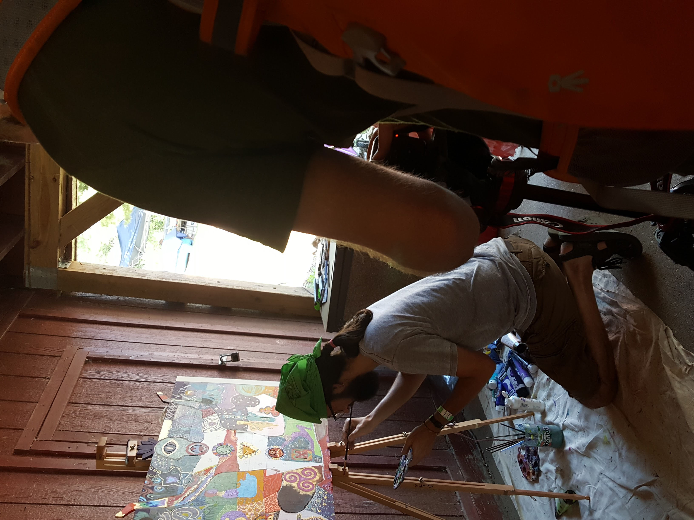
Dozens of participants added their strokes, filling the form with vibrant, chaotic energy.
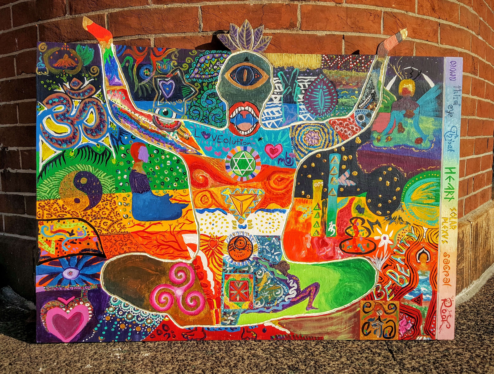
The completed work, balancing the chaos of the crowd with the stillness of the form.
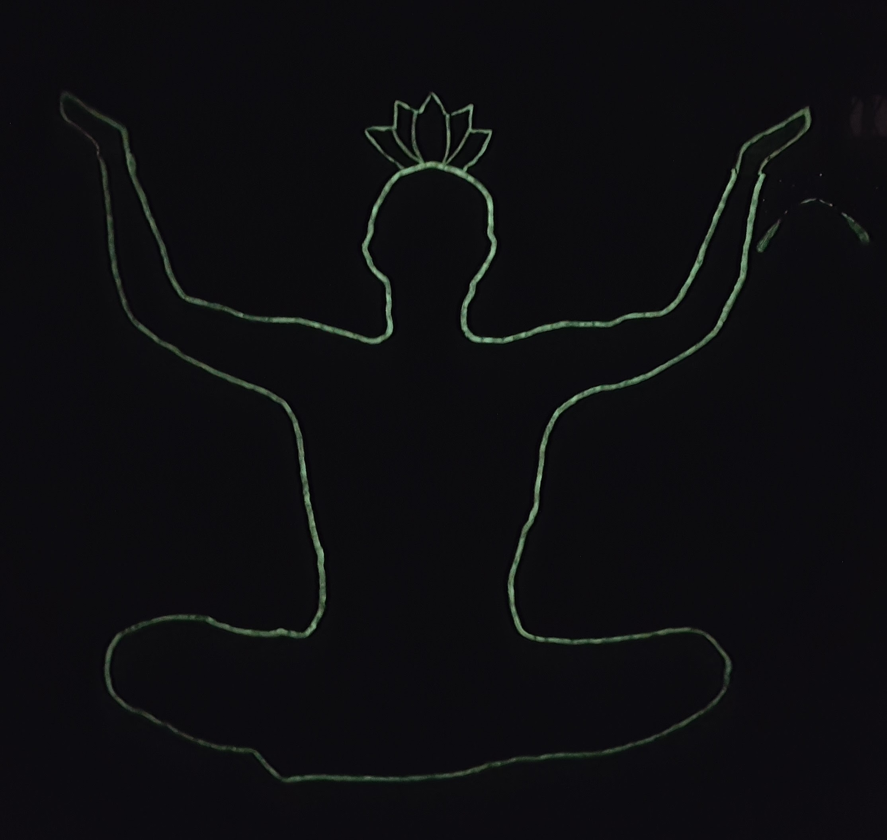
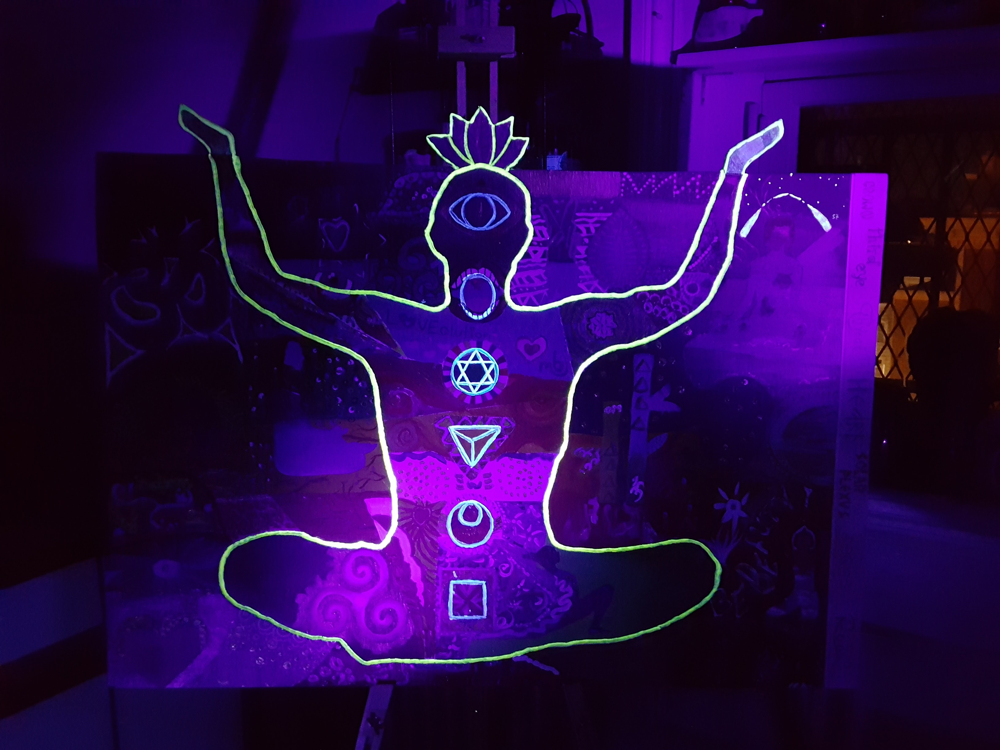
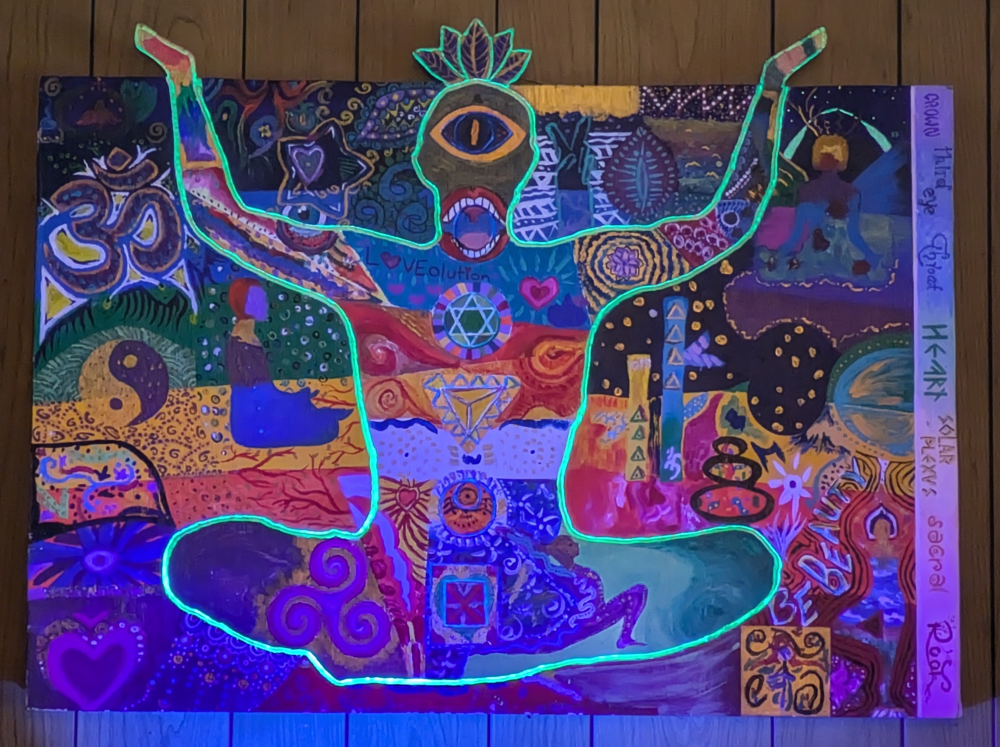
Under blacklight, the chakras and internal energy flow become visible.